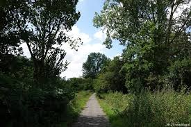

If you and your dog crave a bit more adventure, Schalkwijk Forest offers a peaceful escape with several hidden paths that meander through lush trees and open meadows. This forested area is perfect for longer, more immersive walks, providing a natural retreat where you and your dog can explore in solitude.

Schalkwijk Forest, Haarlem